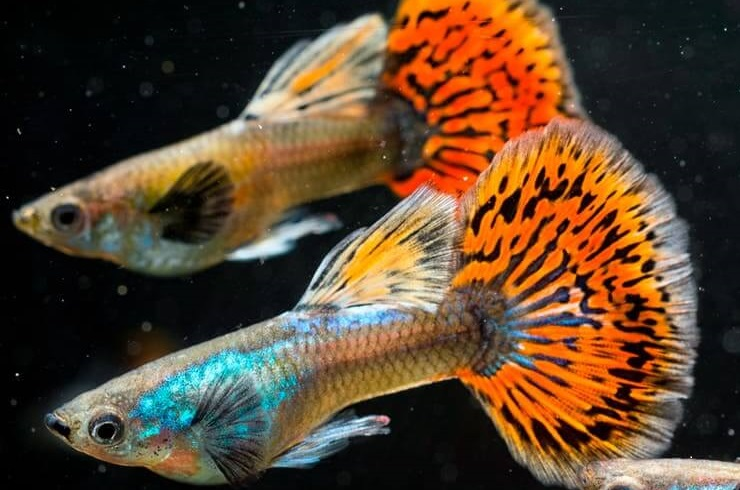
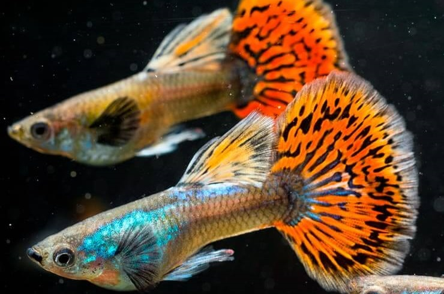
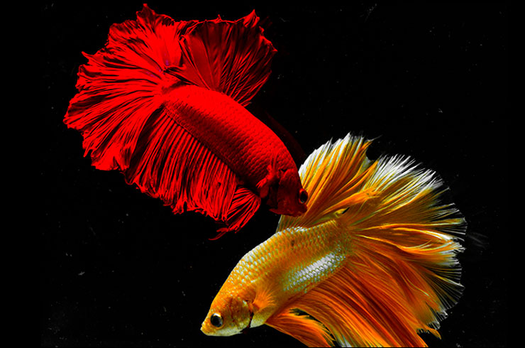
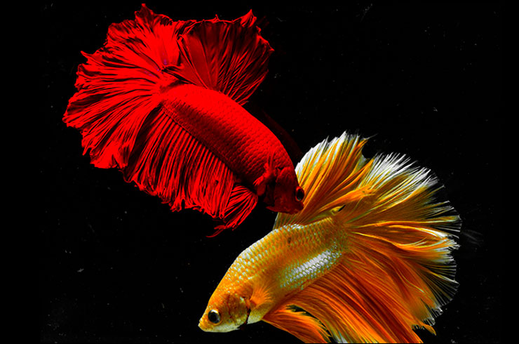

O rybách

Akvária a zrak. „Pohled na pěkné akvárium je velmi uklidňující pro duši, a pokud je přiměřeně osvětlené, také velmi zdravý pro oči. Většina akvárií má zelené rostliny a sledování pomalu se pohybujících ryb mezi rostlinami a kameny je pro oči relaxační. Sledování pěkného akvária je zcela určitě mnohem zdravější než dívání se na televizi nebo tablet,“ říká přednosta oční kliniky Gemini MUDr. Pavel Stodůlka, průkopník laserových operací očí a přední evropský i světový operatér.
Akvária a psychika. „Rybičku v akváriu si sice nepohladíte, ale i tak vám může pozvednout náladu a zbavit stresu, a tím prospívat vašemu zdraví. Podle vědců stačí 20 minut a zbavíme se stresu podobně jako při hypnóze. Navíc většinou je život v akváriu často mnohem zajímavější než program v televizi,“ uvedla ve své přednášce MVDr. Iva Podhorná.
Akvária a krevní tlak. „Studie provedená týmem při univerzitě v anglickém Plymouthu, publikovanou v odborném časopise Environment & Behavior zjistila, že sledování akvária snižuje tepovou frekvenci a krevní tlak. Ze studie také vyplynulo, že čím víc ryb je v akváriu, tím déle na něj lidé dokážou soustředit pozornost a tím lepší mají náladu. „Akvária relativně často využívají lékaři a stomatologové v čekárnách ve snaze co nejvíc uklidnit pacienty. Náš výzkum přinesl silné důkazy, které to potvrzují,“ řekla Deborah Cracknellová z Národního mořského akvária při plymouthské univerzitě, již v roce 2015 citoval slovenský magazín Věda a technika deníku Pravda (viz QR).
Akvária proti alzheimeru. Akvárium má blahodárný vliv dokonce na zdravotní stav lidí stižených Alzheimerovou chorobou. V roce 2002 to ve své studii, publikované v časopise Journal of Nursing Research prokázali Nancy E. Edwardsová a Alan M. Beck. Čtyři měsíce sledovali klienty několika Alzheimer center, v jejichž jídelnách nechali umístit akvária. Tito pacienti málo jedí, což je jedním z jejich velkých problémů. Po instalaci akvárií se jejich chuť k jídlu znatelně zlepšila, takže konzumovali víc jídla a nemuseli v pilulkách dostávat tolik doplňků stravy. Současně se zlepšila i jejich nálada, mnozí přestali být podráždění, nebo naopak depresivní. Celkově lepší nálada se příznivě projevovala i v lepší komunikaci s personálem. Po dvou měsících od instalace akvárií se dokonce projevilo zlepšení paměti pacientů.
 

 
